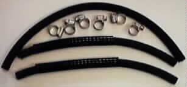

This oil line consists of one 12" woven exterior Gates hose (54-800005)and two hose clamps (06-3248). This oil line is used in two places. This line runs from the left hand feed pipe on the Oil Junction Block (06-2206 or 06-4134 MK3), attached to the back of the engine, to the input on the Oil Filter Mounting Head (06-3139). This line also runs from the output of the Oil Filter Mounting Head (06-3139) to the input pipe on the back of the oil tank next to the banjo. Please note: On the MK3 the Oil Junction Block (06-4134) has longer feed pipes and you may want to shorten this line to the standard 10", but can be used at this length.
In the following picture of the Main Oil Line Assembly (13-400002) the bottom two lines are the return oil lines. The spring protectives (06-3367) shown in the picture do not come with this oil line and must be ordered separately.

This page was written and designed by F. H. Eaton & Associates if you have any questions or comments please contact us at oldbrits@oldbritts.com